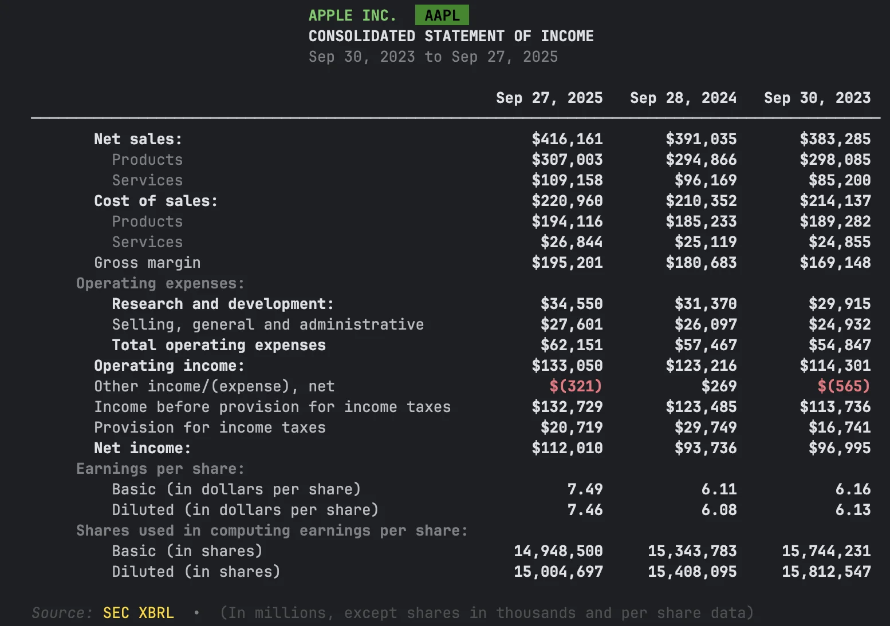
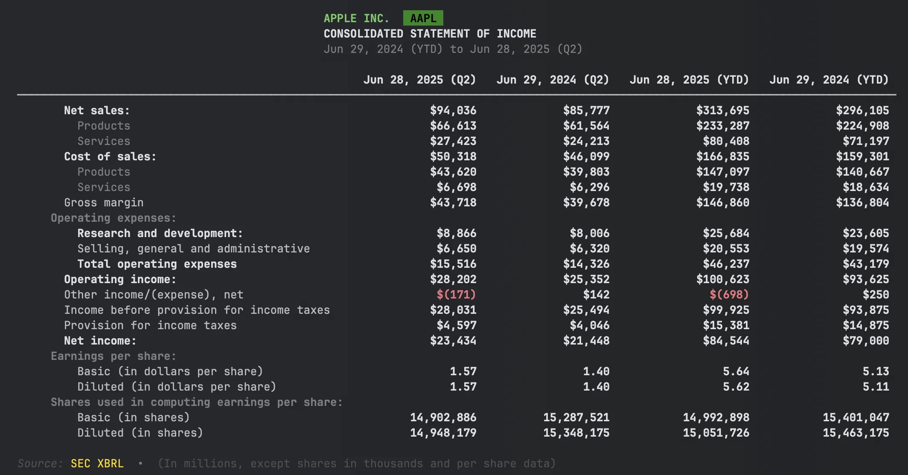
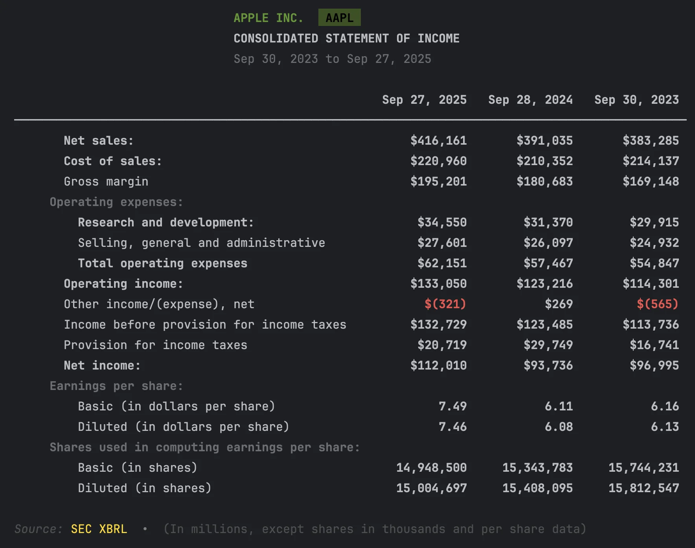
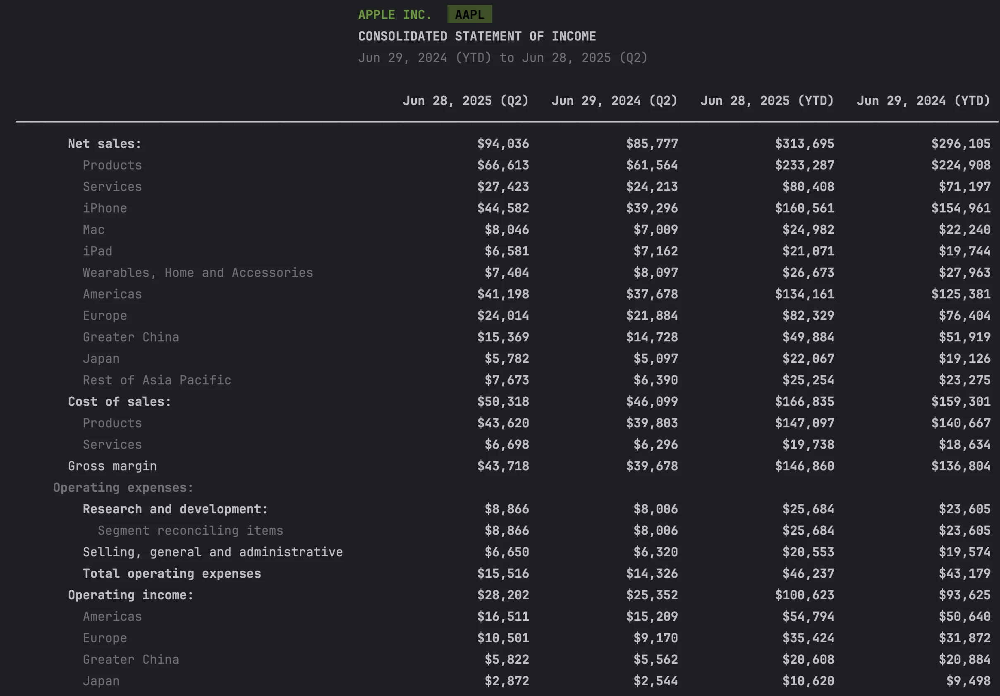

Financial Statements: Income, Balance Sheet, and Cash Flow from SEC Filings
Get financial statements from SEC filings in Python
Quick Start
Three lines to Apple's income statement:
from edgar import Company
company = Company("AAPL")
financials = company.get_financials()
income_statement = financials.income_statement()

That's it. You now have Apple's full income statement from their latest 10-K filing.
Get Specific Values
Need just one number? Use the convenience methods:
financials = company.get_financials()
revenue = financials.get_revenue()
net_income = financials.get_net_income()
total_assets = financials.get_total_assets()
| Method | Returns |
|---|---|
get_revenue() |
Total revenue / net sales |
get_net_income() |
Net income |
get_operating_income() |
Operating income / loss |
get_total_assets() |
Total assets |
get_total_liabilities() |
Total liabilities |
get_stockholders_equity() |
Stockholders' equity |
get_operating_cash_flow() |
Operating cash flow |
get_free_cash_flow() |
Free cash flow |
get_capital_expenditures() |
Capital expenditures |
get_current_assets() |
Current assets |
get_current_liabilities() |
Current liabilities |
All methods accept period_offset to access prior periods (0=current, 1=previous).
Available Statements
financials = company.get_financials()
income = financials.income_statement()
balance = financials.balance_sheet()
cashflow = financials.cashflow_statement()
equity = financials.statement_of_equity()
comprehensive = financials.comprehensive_income()
| Statement | Method |
|---|---|
| Income Statement | income_statement() |
| Balance Sheet | balance_sheet() |
| Cash Flow Statement | cashflow_statement() |
| Statement of Equity | statement_of_equity() |
| Comprehensive Income | comprehensive_income() |
Cash flow naming
The method is cashflow_statement() (no underscore between "cash" and "flow"). The Company object also accepts company.cash_flow() as an alias, but on the Financials object always use cashflow_statement().
Export to DataFrame
Every statement converts to a pandas DataFrame:
income = financials.income_statement()
# Convert to DataFrame
df = income.to_dataframe()
# Export to CSV
df.to_csv("apple_income_statement.csv")
# Export to Excel
df.to_excel("apple_income_statement.xlsx")
The DataFrame preserves the statement structure with labeled rows and period columns.
Quarterly Financials
Use get_quarterly_financials() for 10-Q data:
quarterly = company.get_quarterly_financials()
income = quarterly.income_statement()

| Need | Method |
|---|---|
| Annual (10-K) | company.get_financials() |
| Quarterly (10-Q) | company.get_quarterly_financials() |
Getting Different Levels of Detail
Financial statements can show different levels of detail. Use the view parameter to control what you see:
financials = company.get_financials()
# Summary: Matches SEC Viewer (~15-20 rows)
income = financials.income_statement(view="summary")
# Standard: Matches the filing document (default)
income = financials.income_statement(view="standard")
# Detailed: All dimensional breakdowns
income = financials.income_statement(view="detailed")
Summary View

Detailed View

| View | Shows | Typical Rows | Best For |
|---|---|---|---|
"summary" |
Matches SEC Viewer | ~15-20 | Quick overview, validation |
"standard" |
Matches filing document | ~25-35 | Display, full context |
"detailed" |
All dimensional breakdowns | ~50+ | Data extraction, segment analysis |
Example: Apple Revenue
With view="summary":
Revenue $391,035M
With view="standard":
Revenue:
Products $298,085M
Services $92,950M
With view="detailed":
Revenue:
Products $298,085M
iPhone $201,183M
Mac $29,357M
iPad $26,694M
Wearables, Home and Accessories $40,851M
Services $92,950M
Views with DataFrames
The view parameter also works when exporting to DataFrame:
income = financials.income_statement()
df_summary = income.to_dataframe(view="summary")
df_standard = income.to_dataframe(view="standard")
df_detailed = income.to_dataframe(view="detailed")
When to Use Each View
- Summary: Quick checks, matches SEC Viewer, comparing many companies
- Standard: Matches the filing document, full context with face-level dimensions
- Detailed: Data extraction, segment analysis, complete dimensional breakdowns
Learn more: Dimension Handling Guide
Compare Multiple Periods
To analyze trends across multiple filings, use XBRLS:
from edgar.xbrl import XBRLS
# Get last 3 annual filings
filings = company.get_filings(form="10-K").head(3)
# Stitch them together
xbrls = XBRLS.from_filings(filings)
# Get income statement across all periods
income = xbrls.statements.income_statement()
# Use view="detailed" for dimensional breakdowns across periods
income_detailed = xbrls.statements.income_statement(view="detailed")
The view parameter works the same as on single-period statements ("standard", "detailed", "summary").
This aligns the periods and concepts across filings for easy comparison.
Learn more: Multi-Period Analysis Guide
Why skip amendments?
Use amendments=False when fetching filings. Amended filings (10-K/A) sometimes contain only the corrected sections, not complete financial statements.
Advanced Topics
Raw Facts Query
Query individual XBRL facts for research or custom calculations:
xbrl = filing.xbrl()
# Find all revenue facts
revenue_facts = xbrl.facts.query()\
.by_concept("Revenue")\
.to_dataframe()
# Search by label
rd_facts = xbrl.facts.query()\
.by_label("Research", exact=False)\
.to_dataframe()
Learn more: XBRL Querying Guide
Troubleshooting
"No financial data found"
Some companies (especially newer or smaller ones) may not have XBRL data:
filing = company.get_filings(form="10-K").latest()
if filing.xbrl():
print("XBRL available")
else:
print("No XBRL - try filing.text() for raw content")
"Statement is empty"
Try using the detailed view to include all dimensional data:
df = income.to_dataframe(view="detailed")
"Numbers don't match the SEC website"
Check that you're looking at the right period:
xbrl = filing.xbrl()
print(xbrl.reporting_periods)
API Quick Reference
Company-Level (Easiest)
| Method | Description |
|---|---|
company.get_financials() |
Latest annual financials (10-K) |
company.get_quarterly_financials() |
Latest quarterly financials (10-Q) |
Financials Object
| Method | Description |
|---|---|
financials.income_statement() |
Income statement |
financials.balance_sheet() |
Balance sheet |
financials.cashflow_statement() |
Cash flow statement |
financials.get_revenue() |
Revenue value |
financials.get_net_income() |
Net income value |
financials.get_total_assets() |
Total assets value |
financials.get_financial_metrics() |
Dict of all key metrics |
Statement Object
| Method | Description |
|---|---|
statement.to_dataframe() |
Convert to pandas DataFrame |
statement.to_dataframe(view="summary") |
Matches SEC Viewer |
statement.to_dataframe(view="standard") |
Matches filing document |
statement.to_dataframe(view="detailed") |
All dimensional breakdowns |
Filing-Level (More Control)
| Method | Description |
|---|---|
filing.xbrl() |
Parse XBRL from filing |
xbrl.statements.income_statement() |
Get income statement |
xbrl.facts.query() |
Query individual facts |
Multi-Period Analysis
| Method | Description |
|---|---|
XBRLS.from_filings(filings) |
Stitch multiple filings together |
xbrls.statements.income_statement() |
Aligned multi-period statement |
Next Steps
- Stock Splits & EPS Normalization – Detect splits and normalize per-share metrics
- Multi-Period Analysis – Build custom time series
- Standardization – How cross-company comparison works
- XBRL Documentation – Complete XBRL reference
See it on edgar.tools
The code above extracts financials programmatically. edgar.tools shows the same data visually — plus Disclosure Search, which lets you browse XBRL topics across every 10-K year for a company.
- See Apple's financials →
- Browse income tax disclosures across all filing years →
- Explore all 12 XBRL disclosure topics →
Export to Excel, PDF, or CSV with one click. Free tier available. Pricing →